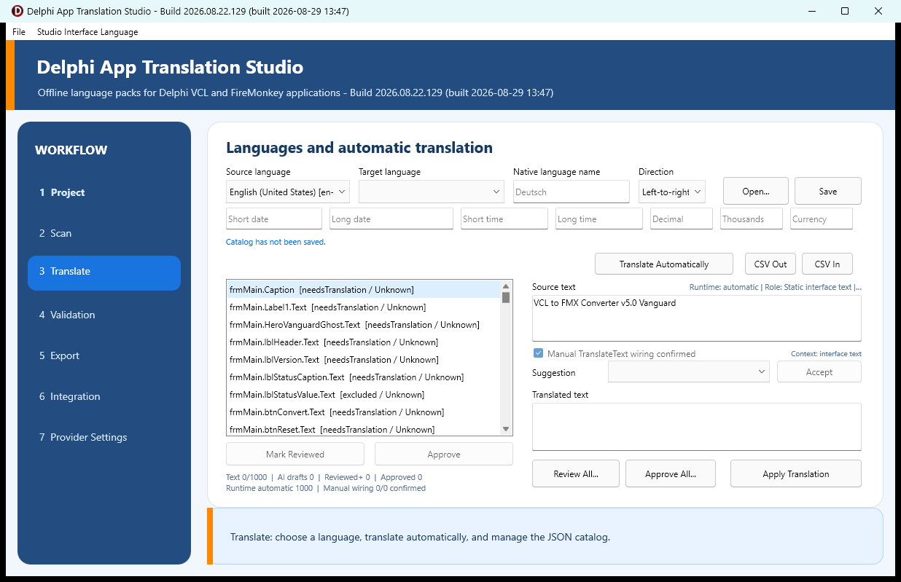
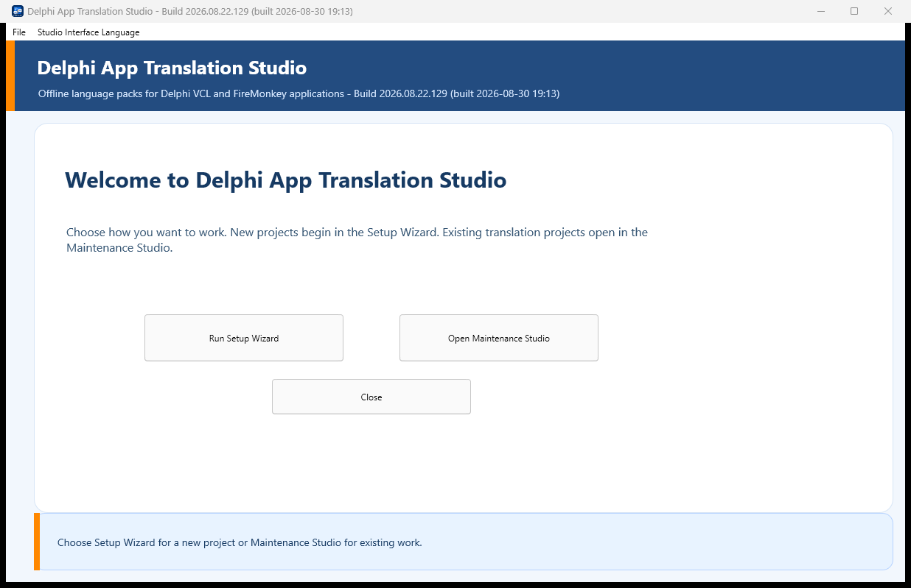

P
Select the project
Detect the application identity, VCL or FMX framework, forms, source units, targets, and normal build outputs.
Open-source localization for Delphi
Delphi App Translation Studio scans VCL and FireMonkey projects, creates reviewable translations, validates the result, and exports compact JSON language packs that work offline in the finished application.
Version 1.0.0 is ready for production development with the validated Windows and RAD Studio configuration described in the guides. Keep your Delphi project under version control, follow the Setup Wizard Guide, and review machine-translated wording and every deployed screen before shipping your application.
Localization remains a developer-owned process: short phrases, specialized terminology, dynamic text, right-to-left layouts, and custom controls can require corrections or additional integration.

The current release brings together the Studio, VCL and FireMonkey integration packages, source, samples, and current guides. It includes the earlier RAD Studio shutdown correction, improved text scanning, spacing safeguards, and punctuation-aware translation.
A development tool, not an EXE translator
Run the Studio while forms, resources, messages, and layouts can still be examined in Delphi. Rescan as the application changes, preserve translations that still match, and send only new or revised eligible text to the provider.
Machine translation can be very useful, but it cannot guarantee perfect wording or layout. The developer remains responsible for terminology, dynamic messages, custom controls, right-to-left behavior, and final visual review.
Guided from source to deployment
The Setup Wizard handles the repeatable work and keeps the important decisions visible.
Detect the application identity, VCL or FMX framework, forms, source units, targets, and normal build outputs.
Build a stable catalog from saved forms and approved Delphi text, then translate unresolved entries with DeepL or Google.
Inspect terminology, placeholders, source changes, language direction, and conservative layout proposals before export.
Generate the VCL or FMX component kit and place compatible source and target packs beside the intended executable.
Translation with application context
“Play,” “Close,” “Schedule,” and “Enable” can mean different things in different applications. The Studio adds proper context, control roles, surrounding evidence, terminology, and review status with each entry.

Designer-owned integration
Place one framework-appropriate language manager and one connected selector on the primary form. Their published properties remain visible in Object Inspector, and ordinary forms are managed through the application lifecycle.
Built around valuable source code
Project detection and scanning inspect saved source without executing it.
Final processing begins only after the project, backup, and intended actions are reviewed.
Catalogs, packs, settings, glossaries, and preferences use validated replacement and recovery files.
Provider keys stay on the developer computer and never belong in the target application.
Version 1.0.0 is available
Download the matched software and guides, work from a backed-up project, and verify the generated language packs in the actual application. Report functional, layout, translation, RTL, and documentation issues without sharing private source or credentials.
Your feedback matters
Tell us what worked, what did not work, and what could be clearer. Errors that are not reported cannot be investigated or corrected, and the application cannot continue to improve without feedback from developers using it in real projects.
Please report translation problems, right-to-left display issues, unexpected program behavior, component or package problems, documentation questions, and anything that made the workflow confusing. Even a small observation can identify an improvement that benefits every user.
When reporting an issue, please include the Delphi framework, target platform, selected language, screen or workflow involved, and the steps needed to reproduce the problem. Screenshots are helpful, but please remove API keys, private source code, personal information, and other sensitive material before submitting them.